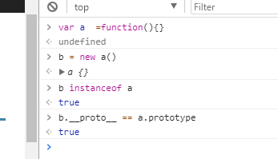
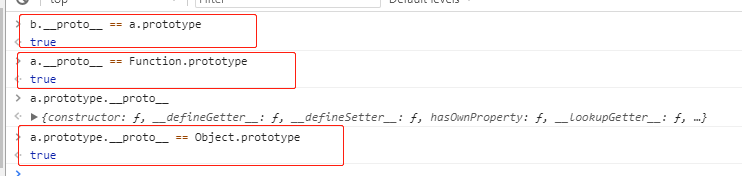
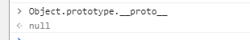
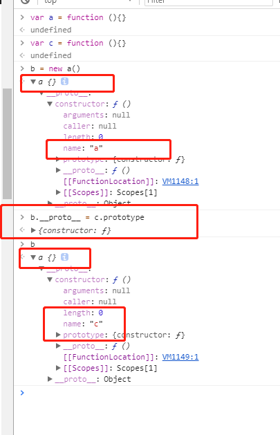
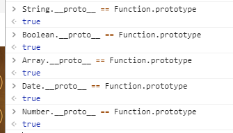
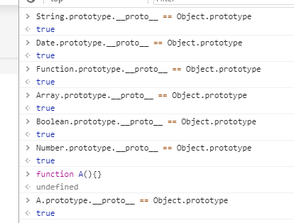

js相关知识点的杂记
1、原型链相关解析

1、该实例中a为一个构造函数（构造函数记得要首字母大写，哈哈哈），A存在prototype的原型对象
2、同时A.prototype原型对象中存在constructor属性，是一个指向构造函数A的指针
3、实例b有一个__proto__的属性指向构造函数的原型对象

4、万物皆对象，任何实例的__proto__属性都是指向其构造函数的的原型对象
除了null和undefined外，String，Number，Boolean和其他构造函数等都是存在__proto__属性，而且最后原型链终端是Object的原型对象
比如构造函数A的原型对象的__proto__指向的就是Object的原型对象

5、Object的原型对象的proto指向的就是null，但是本质上null也是一个对象
注意:
1、原型对象可以修改

2、__proto__属性也可以修改
附上各种js数据类型的原型对象解析*
1、null 无原型对象，是原型链的终点
2、undefined: js基本数据类型，全局属性【只有当变量被申明后才会被赋值为undefined】
3、String，Boolean，Number，Array，Date等构造函数对象的原型链中存在构造函数Function的原型对象【Boolean.__proto__ == Function.prototype】
即构造函数的__proto__指向Function.prototype

4、任何的构造函数的原型对象的__proto__属性指向Object的原型对象【原型对象的本质是对象】

2、instanceof 和typeof
instanceof 运算符用来测试一个对象在其原型链中是否存在一个构造函数的 prototype 属性.
typeof操作符返回一个字符串，表示未经计算的操作数的类型。【除了原始数据类型返回对应的类型字符串外（null，undefined，string，boolean，number）其他的函数返回function，对象返回object】